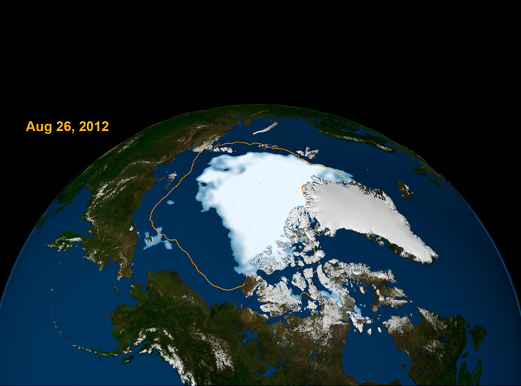

Climate Change as a Cause of Future Mass Extinction
The potential future effects of global climate change include more frequent wildfires, longer periods of drought in some regions and an increase in the number, duration and intensity of tropical storms.

Global climate change has already had observable effects on the environment. Glaciers have shrunk, ice on rivers and lakes is breaking up earlier, plant and animal ranges have shifted and trees are flowering sooner.
Effects that scientists had predicted in the past would result from global climate change are now occurring: loss of sea ice, accelerated sea level rise and longer, more intense heat waves.
"Taken as a whole, the range of published evidence indicates that the net damage costs of climate change are likely to be significant and to increase over time." - Intergovernmental Panel on Climate Change
Scientists have high confidence that global temperatures will continue to rise for decades to come, largely due to greenhouse gases produced by human activities. The Intergovernmental Panel on Climate Change (IPCC), which includes more than 1,300 scientists from the United States and other countries, forecasts a temperature rise of 2.5 to 10 degrees Fahrenheit over the next century.
According to the IPCC, the extent of climate change effects on individual regions will vary over time and with the ability of different societal and environmental systems to mitigate or adapt to change.
The IPCC predicts that increases in global mean temperature of less than 1.8 to 5.4 degrees Fahrenheit (1 to 3 degrees Celsius) above 1990 levels will produce beneficial impacts in some regions and harmful ones in others. Net annual costs will increase over time as global temperatures increase.
"Taken as a whole," the IPCC states, "the range of published evidence indicates that the net damage costs of climate change are likely to be significant and to increase over time."
Future Effects
Some of the long-term effects of global climate change in the United States are as follows, according to the Third and Fourth National Climate Assessment Reports:
- Change Will Continue Through This Century and Beyond Global climate is projected to continue to change over this century and beyond. The magnitude of climate change beyond the next few decades depends primarily on the amount of heat-trapping gases emitted globally, and how sensitive the Earth’s climate is to those emissions.
- Temperatures Will Continue to Rise Because human-induced warming is superimposed on a naturally varying climate, the temperature rise has not been, and will not be, uniform or smooth across the country or over time.
- Frost-free Season (and Growing Season) will Lengthen The length of the frost-free season (and the corresponding growing season) has been increasing nationally since the 1980s, with the largest increases occurring in the western United States, affecting ecosystems and agriculture. Across the United States, the growing season is projected to continue to lengthen.
- Changes in Precipitation Patterns Average U.S. precipitation has increased since 1900, but some areas have had increases greater than the national average, and some areas have had decreases. More winter and spring precipitation is projected for the northern United States, and less for the Southwest, over this century.
- More Droughts and Heat Waves Droughts in the Southwest and heat waves (periods of abnormally hot weather lasting days to weeks) everywhere are projected to become more intense, and cold waves less intense everywhere.
- Hurricanes Will Become Stronger and More Intense The intensity, frequency and duration of North Atlantic hurricanes, as well as the frequency of the strongest (Category 4 and 5) hurricanes, have all increased since the early 1980s. The relative contributions of human and natural causes to these increases are still uncertain. Hurricane-associated storm intensity and rainfall rates are projected to increase as the climate continues to warm.
- Sea Level Will Rise 1-4 feet by 2100 Global sea level has risen by about 8 inches since reliable record keeping began in 1880. It is projected to rise another 1 to 4 feet by 2100. This is the result of added water from melting land ice and the expansion of seawater as it warms.
- Arctic Likely to Become Ice-Free The Arctic Ocean is expected to become essentially ice free in summer before mid-century.

In a future in which heat-trapping gas emissions continue to grow, increases of a month or more in the lengths of the frost-free and growing seasons are projected across most of the U.S. by the end of the century, with slightly smaller increases in the northern Great Plains. The largest increases in the frost-free season (more than eight weeks) are projected for the western U.S., particularly in high elevation and coastal areas. The increases will be considerably smaller if heat-trapping gas emissions are reduced.


In the next several decades, storm surges and high tides could combine with sea level rise and land subsidence to further increase flooding in many regions. Sea level rise will continue past 2100 because the oceans take a very long time to respond to warmer conditions at the Earth’s surface. Ocean waters will therefore continue to warm and sea level will continue to rise for many centuries at rates equal to or higher than those of the current century.
